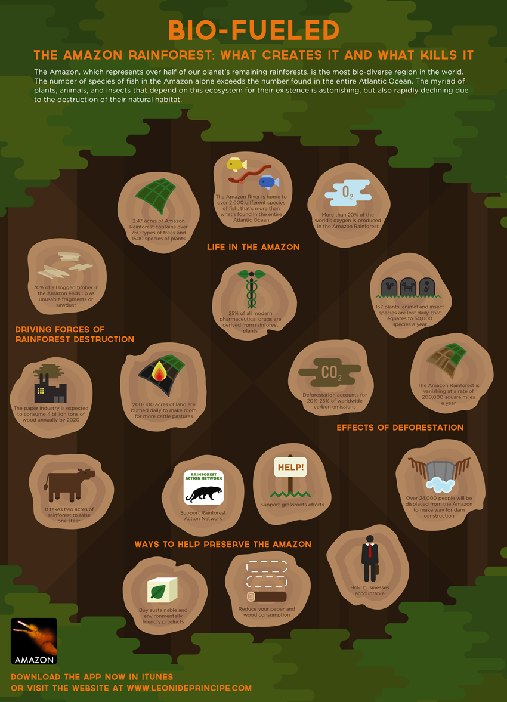

- The Amazon Rainforest covers over a billion acres, encompassing areas in Brazil, Venezuela, Colombia and the Eastern Andean region of Ecuador and Peru. If Amazonia were a country, it would be the ninth largest in the world.
- The Amazon Rainforest has been described as the "Lungs of our Planet" because it provides the essential environmental world service of continuously recycling carbon dioxide into oxygen. More than 20 percent of the world oxygen is produced in the Amazon Rainforest.
- More than half of the world's estimated 10 million species of plants, animals and insects live in the tropical rainforests. One-fifth of the world's fresh water is in the Amazon Basin.
- One hectare (2.47 acres) may contain over 750 types of trees and 1500 species of higher plants.
- At least 80% of the developed world's diet originated in the tropical rainforest. Its bountiful gifts to the world include fruits like avocados, coconuts, figs, oranges, lemons, grapefruit, bananas, guavas, pineapples, mangos and tomatoes; vegetables including corn, potatoes, rice, winter squash and yams; spices like black pepper, cayenne, chocolate, cinnamon, cloves, ginger, sugar cane, tumeric, coffee and vanilla and nuts including Brazil nuts and cashews.
- At least 3000 fruits are found in the rainforests; of these only 200 are now in use in the Western World. The Indians of the rainforest use over 2,000.
- Rainforest plants are rich in secondary metabolites, particularly alkaloids. Biochemists believe alkaloids protect plants from disease and insect attacks. Many alkaloids from higher plants have proven to be of medicinal value and benefit.
- Currently, 121 prescription drugs currently sold worldwide come from plant-derived sources. And while 25% of Western pharmaceuticals are derived from rainforest ingredients, less than 1% of these tropical trees and plants have been tested by scientists.
- The U.S. National Cancer Institute has identified 3000 plants that are active against cancer cells. 70% of these plants are found in the rainforest. Twenty-five percent of the active ingredients in today's cancer-fighting drugs come from organisms found only in the rainforest.
- Vincristine, extracted from the rainforest plant, periwinkle, is one of the world's most powerful anticancer drugs. It has dramatically increased the survival rate for acute childhood leukemia since its discovery.
- In 1983, there were no U.S. pharmaceutical manufacturers involved in research programs to discover new drugs or cures from plants. Today, over 100 pharmaceutical companies and several branches of the US government, including giants like Merck and The National Cancer Institute, are engaged in plant research projects for possible drugs and cures for viruses, infections, cancer, and even AIDS.
